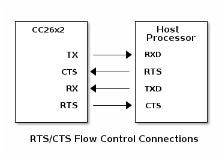

Zigbee Network Processor (ZNP) Interface¶
Introduction¶
The Z-Stack Zigbee Network Processor (ZNP) is a cost-effective, low power solution that provides full Zigbee functionality with a minimal development effort. An example is already provided for the SimpleLink CC13xx/CC26xx SDK at the following location:
<SDK_DIR>\examples\rtos\<LaunchPad variant>\zstack\znp\tirtos7\<ccs/iar>
In this solution the Z-Stack runs on a SoC, i.e. the CC13xx or CC26xx, and the application runs on an external microcontroller, being any host processor. The Z-Stack ZNP handles all the Zigbee protocol tasks, and leaves the resources of the application microcontroller free to handle the application.
This makes it easy for users to add Zigbee to new or existing products at the same time as it provides great flexibility in choice of microcontroller or other host operating system.
Z-Stack ZNP interfaces to any microcontroller through a UART serial interface.
Figure 69. Single Device and ZNP Configuration¶
Acronyms¶
AF |
Zigbee Application Framework |
API |
Application Programming Interface |
AREQ |
Asynchronous Request |
BDB |
Base Device Behavior |
CTS |
Clear To Send |
FCS |
Frame Check Sequence |
GP |
Green Power |
GPIO |
General Purpose I/O |
NPI |
Network Processor Interface |
NV |
Non-Volatile |
PA/LNA |
Power Amplifier / Low Noise Amplifier (CC259x) |
RTS |
Ready To Send |
SoC |
System on Chip |
SREQ |
Synchronous request |
SRSP |
Synchronous response |
UART |
Universal Asynchronous Receiver Transmitter |
ZDO |
Zigbee Device Object |
ZNP |
Zigbee Network Processor |
Physical Interface¶
The following sections describe the physical interfaces for the ZNP.
Network Processor Signals¶
The figure below shows how an application processor interfaces with the CC13xx or CC26xx.
The CC13xx or CC26xx ZNP uses RX/TX/RTS/CTS for UART communication. See Signal Description for details.
Pin Configurations¶
The CC13xx or CC26xx ZNP pin configurations are described in the following sections.
Default Pin Configuration¶
By default, the pin configurations are the following:
Transport |
CC13xx or CC26xx ZNP signal |
CC26x2 PIN |
CC13x2 PIN |
Direction |
|---|---|---|---|---|
UART |
TX |
DIO_3 |
DIO_13 |
Out |
UART |
RX |
DIO_2 |
DIO_12 |
In |
UART |
GND |
GND |
GND |
In/Out |
Optional Pin Configuration¶
If NPI_FLOW_CTRL is enabled then the following pins also apply:
Transport |
CC13xx or CC26xx ZNP signal |
CC13xx or CC26xx PIN |
Direction |
|---|---|---|---|
UART |
CTS |
DIO_19 |
In |
UART |
RTS |
DIO_18 |
Out |
For additional information of different parameters which can be modified, refer to the Application Preprocessor Configuration.
UART Transport¶
Configuration¶
The following UART configuration is supported:
Baud rate: 115200
CTS/RTS flow control with
NPI_FLOW_CTRLenabled (disabled by default)8-N-1 byte format
Frame Format¶
UART transport frame format is shown in the following figure. The left-most field is transmitted first over the wire. This is the same General Serial Packet defined by the Z-Stack Monitor and Test API.
SOF |
General Frame Format |
FCS |
|---|---|---|
Bytes: 1 |
3-253 |
1 |
SOF (Start of Frame): This is always set to 0xFE.
General Frame Format: This is the general frame format as described in General Frame Format.
FCS (Frame Check Sequence): This field is computed as an XOR of all the bytes in the general format frame fields.
Sample FCS Calculation¶
Shown below is a C example for the FCS calculation:
uint8_t npiframe_calcMTFCS(uint8_t *msg_ptr, uint8_t len)
{
uint8_t x;
uint8_t xorResult;
xorResult = 0;
for (x = 0; x < len; x++, msg_ptr++)
{
xorResult = xorResult ^ *msg_ptr;
}
return (xorResult);
}
Signal Description¶
The following standard UART signals are used:
TX: Transmit data
RX: Receive data
CTS: Clear to Send
RTS: Ready to Send
Note
CTS/RTS are disabled by default, and are optional. You may enable CTS/RTS by defining NPI_FLOW_CTRL in the predefined symbols. For more information, refer to the Application Preprocessor Configuration.
The figure below shows the RTS/CTS flow control connections to the host processor. On the CC13xx or CC26xx, RTS and CTS are active-low signals. The RT output is driven low when the receive register is empty and reception is enabled. Transmission of a byte does not occur before the CTS input is low.
Signal Operation¶
UART transport sends and receives data asynchronously. Data can be sent and received simultaneously and the transfer of a frame can be initiated at any time by either the application processor or the ZNP SoC.
General Frame Format¶
The general frame format is shown below. The left-most field is transmitted first over the wire. For multi-byte fields, the lowest order byte is transmitted first. This is the same General Frame Format defined by the Z-Stack Monitor and Test API.
Length |
Command |
Data |
|---|---|---|
Bytes: 1 |
2 |
0-250 |
Length: The length of the data field of the frame. The length can range from 0-250.
Command: The Command ID for the message. Refer to Command Field for more information about the Command field.
Data: The frame data. This field contains actual data to be transmitted. This depends on the command field and is described for each command in ZNP Software Command Interface. The size can range from 0-250 bytes.
Command Field¶
The command field is constructed of two bytes. The bytes are formatted as shown in the following figure. The Cmd0 byte is transmitted first, followed by the Cmd1 byte.
Cmd0 |
Cmd1 |
|
|---|---|---|
Bit: 7-5 |
4-0 |
7-0 |
Type |
Subsystem |
Id |
Type: The command type described by bits 5, 6, 7 of the Cmd0 byte. The command type has one of the following values:
Type
Cmd0 Value
POLL
0x00
SREQ
0x20
AREQ
0x40
SRSP
0x60
0: POLL. Not used in Z-Stack.
1: SREQ: A synchronous request that requires an immediate response. For example, a function call with a return value would use an SREQ command.
2: AREQ: An asynchronous request. For example, a callback event or a function call with no return value would use an AREQ command.
3: SRSP: A synchronous response. This type of command is only sent in response to a SREQ command. For an SRSP command the subsystem and ID are set to the same values as the corresponding SREQ. The length of an SRSP is generally nonzero, so an SRSP with length=0 can be used to indicate an error.
4-7: Reserved.
Subsystem: The subsystem of the command is described by bits 0-4 of Cmd0. The command subsystem values are shown below:
Subsystem Value |
Subsystem Name |
|---|---|
0x00 |
RPC Error interface |
0x01 |
SYS interface |
0x02 |
MAC interface |
0x03 |
NWK interface |
0x04 |
AF interface |
0x05 |
ZDO interface |
0x06 |
Simple API interface |
0x07 |
UTIL interface |
0x08 |
DEBUG interface |
0x09 |
APP Interface |
0x0F |
APP config |
0x15 |
GreenPower |
ID: The command ID. The ID maps to a particular interface message.
Cmd1 provides an 8-bit command ID code, which maps to a specific interface message for the Subsystem specified in Cmd0. Therefore, each MT subsystem can provide up to 256 message handling functions.
Command Error¶
When an SREQ command from the Host Processor is not recognized by the ZNP, an error SRSP is returned, detailed in the two tables below.
SRSP:
Bytes: 1 |
1 |
1 |
1 |
1 |
1 |
|---|---|---|---|---|---|
Length = 0x03 |
Cmd0 = 0x60 |
Cmd1 = 0x00 |
ErrorCode |
ReqCmd0 |
ReqCmd1 |
Attributes:
Attribute |
Length (byte) |
Description |
||||||||||
|---|---|---|---|---|---|---|---|---|---|---|---|---|
ErrorCode |
1 |
The error code maps to one of the following enumerated values.
|
||||||||||
ReqCmd0 |
1 |
The Cmd0 value of the processed SREQ |
||||||||||
ReqCmd1 |
1 |
The Cmd1 value of the processed SREQ |
Initialization Procedures¶
CC13xx or CC26xx ZNP Power-up Procedure¶
The recommended power-up procedure is as follows:
Application processor and CC13xx or CC26xx power up.
The application processor initializes its UART interface.
The application processor receives the
SYS_RESET_INDmessage.
The CC13xx or CC26xx ZNP can be reset when the application processor sends a
SYS_RESET_REQ message.
ZNP Software Command Interface¶
The ZNP software command interface is sub-divided into the following categories
The SYS interface (MT_SYS) provides the application processor with a low level interface to the ZNP hardware and software.
The AF (MT_AF) and ZDO (MT_ZDO) interfaces feature the complete Zigbee interface and can be used to create a full range of Zigbee compliant applications. The AF (Application Framework) interface allows the application processor to register its application with the ZNP and send and receive data. The ZDO (Zigbee Device Object) interface provides various Zigbee management functions like device and service discovery.
The UTIL (MT_UTIL) interface provides support functionalities such as setting PAN-ID, getting device info, getting NV info, subscribing callbacks, etc.
The APP CONF (MT_APP_CNF) interface provides support for BDB functionality such as set Install Codes, Primary or Secondary Channel, trigger different commissioning methods and other Trust Center configurations.
Each of these are enabled inside of the project
Stack/Config/znp_cnf.opts file. For further details on the MT
interface, refer to the Z-Stack Monitor and Test API.
Configuration Interface¶
The ZNP device has numerous parameters that can be configured by the application processor. These configuration parameters are stored in non-volatile memory on the ZNP device and their values persist across a device reset.
The configuration parameters are divided into “network-specific” and “device-specific” parameters. The “network-specific” configuration parameters should be set to the same value for all ZNP devices in a Zigbee network to ensure proper network operation. The “device-specific” parameters can be set to different values on each device. These parameters are listed in detail in Device Specific Configuration Parameters and Network Specific Configuration Parameters. These configuration parameters must be written in NV for which the host processor must use the MT interface to write NV parameters into the ZNP device. Refer to the Z-Stack Monitor and Test API for further details on how to write into NV.
When the ZNP device powers up, it reads two of the configuration
parameters immediately. These are the STARTOPT_CLEAR_CONFIG bit
(part of the ZCD_NV_STARTUP_OPTION parameter) and the
ZCD_NV_LOGICAL_TYPE parameters. Any modification of these parameters
will require a ZNP device reset before they can take effect.
Device Specific Configuration Parameters¶
ZCD_NV_STARTUP_OPTION¶
These are the ZCD_NV_STARTUP_OPTION values:
ZCD_STARTOPT_DEFAULT_CONFIG_STATE (0x01)
ZCD_STARTOPT_DEFAULT_NETWORK_STATE (0x02)
ZCD_STARTOPT_AUTO_START (0x04)
ZCD_STARTOPT_CLEAR_CONFIG (ZCD_STARTOPT_DEFAULT_CONFIG_STATE)
ZCD_STARTOPT_CLEAR_STATE (ZCD_STARTOPT_DEFAULT_NETWORK_STATE)
ZCD_STARTOPT_CLEAR_NWK_FRAME_COUNTER (0x80)
Item ID |
Size |
Default Value |
|---|---|---|
0x0003 |
1 Byte |
0x00 |
This parameter controls the device startup options. This is a bit mask of the following values:
Bit Position |
Description |
|---|---|
7 |
ZCD_STARTOPT_CLEAR_NWK_FRAME_COUNTER |
6-2 |
Reserved |
1 |
ZCD_STARTOPT_CLEAR_STATE |
0 |
ZCD_STARTOPT_CLEAR_CONFIG |
ZCD_STARTOPT_CLEAR_NWK_FRAME_COUNTER – If this option is set, then the network frame counter is cleared for all networks.
Note
This should be use only for debug purposes as the network frame counters must be persistant, even after Factory New resets. The usage of this option during the operation in the networks may lead to undesaried behaviour, such as get the ZNP device ignored by other devices in the network.
ZCD_STARTOPT_CLEAR_CONFIG – If this option is set, the device will overwrite all the configuration parameters (except this one) with the “default” values that it is programmed with. This is used to erase the existing configuration and bring the device into a known state.
Note
The
ZCD_STARTOPT_CLEAR_CONFIGbit is read by the ZNP device immediately when it powers up after a reset. When the configuration parameters are restored to defaults, theZCD_NV_STARTUP_OPTIONitself is not restored except for clearing theZCD_STARTOPT_CLEAR_CONFIGbit.
ZCD_STARTOPT_CLEAR_STATE – If this option is set, the device will clear its previous network state (which would exist if the device had been operating on a network prior to the reset). This is typically used during application development. During regular device operation, this flag is typically not set, so that an accidental device reset will not cause loss of network state.
The ZNP device has two kinds of information stored in non-volatile memory. The configuration parameters (in this section) and network state information (in Network Specific Configuration Parameters)
The configuration parameters are configured by the user before start of Zigbee operation.
The network state information is collected by the device after it joins a network and creates bindings (at runtime). This is not set by the application processor. This information is stored so that if the device were to reset, it can restore itself without going through the network joining and binding process again.
If the application processor does not wish to continue operating in
the previous Zigbee network, it needs to instruct the ZNP device to
clear the network state information and start again based on the
configuration parameters. This is done by setting the
ZCD_STARTOPT_CLEAR_STATE bit in the startup option.
ZCD_NV_LOGICAL_TYPE¶
Item ID |
Size |
Default Value |
|---|---|---|
0x0087 |
1 Byte |
0x00 |
This is the logical type of the device in the Zigbee network. This can
be set to a ZG_DEVICETYPE_COORDINATOR (0x00),
ZG_DEVICETYPE_ROUTER (0x01), or ZG_DEVICETYPE_ENDDEVICE (0x02).
Note
This parameter is read by the ZNP device immediately when it powers up after a reset.
ZCD_NV_ZDO_DIRECT_CB¶
This is set to TRUE by zgZdoDirectCB in zglobals.c
Item ID |
Size |
Default Value |
|---|---|---|
0x008F |
1 Byte |
TRUE |
This configures the manner in which ZDO responses (hereby referred to as
callbacks) are issued to the host processor. By default, this item is
set to TRUE, which means that the host processor will receive the
“verbose” response. For example, the host processor would receive the
ZDO_IEEE_ADDR_RSP command in response to ZDO_IEEE_ADDR_REQ.
If ZCD_NV_ZDO_DIRECT_CB is set to FALSE,
then the host processor must use the ZDO_MSG_CB_REGISTER command to
subscribe to a specific ZDO callback in order to receive it.
Network Specific Configuration Parameters¶
ZCD_NV_PANID¶
Item ID |
Size |
Default Value |
|---|---|---|
0x0083 |
2 Bytes |
0xFFFF |
This parameter identifies the Zigbee network. This should be set to a value between 0 and 0x3FFF. Networks that exist in the same vicinity must have different values for this parameter. It can be set to a special value of 0xFFFF to indicate “don’t care”.
Z-Stack 3.0 ZNP Considerations¶
Backward compatibility¶
ZNP is backward compatible with non Z3.0 devices by using the same API that already existed in previous releases of the Z-Stack, or by using Base Device Behavior commissioning MT interface with exception of the new security schemas for Z3.0 such as Distributed Security Network or Install Code Derived Trust Center Link Key.
ZNP for Zigbee 3.0¶
While the ZNP implementation provides a compatible baseline for Zigbee 3.0 devices, a full implementation of a Zigbee 3.0 device involves additional layers on top of the ZNP. These layers shall be implemented by the user on the host-side of the stack, since they are outside the scope of the network processor. The ZNP provides several new interfaces to enable the required functionality on the host.
In order to update a legacy ZNP-based device to support Zigbee 3.0, the following main updates need to be implemented on the host:
Base Device Behavior Specification:
Finding and Binding: Host processor is required to implement Finding and Binding commissioning method (either as Initiator or as Target) according to the cluster supported by the host application.
Touchlink (optional): Proximity-based commissioning method.
Green Power Basic Proxy:
Zigbee 3.0 coordinator and router devices must implement Green Power Basic proxy functionality. ZNP includes the necessary GP Stub interfaces which are available to the application and allow it to implement GP basic proxy functionality on the host processor.
ZNP Startup Procedure for Zigbee 3.0 Implementation¶
After executing the power-up procedure, the host processor must call some mandatory APIs before executing any APIs that invoke Zigbee over-the-air messaging. Not following this sequence could result in unexpected behaviour. The recommended startup procedure is as follows:
The host processor must use the
SYS_OSAL_NV_WRITEcommand to configure at the minimum theZCD_NV_LOGICAL_TYPE.If logical device is defined as ZC or ZR, GP basic proxy must be initialized in the host processor (No ZNP commands are required until interaction with GP devices are needed).
Optional configurations to commission the device are:
Set the Primary and/or Secondary channel mask to perform Formation or Network Steering.
Set the PAN ID to create or join by setting
ZCD_NV_PAN_ID.Set Install codes for networks which require it.
AF_REGISTERcommand should be sent by the host processor to register the application endpoint.Host should use
APP_CNF_BDBAPI to set channel masks and create or join the network via standard BDB specification.The host processor should wait for BDB notifications on the different commissioning methods used by the host. Also host processor can rely on the supported ZDO states reported.
![@startuml
participant "Host Processor" as HP
participant ZNP
note left of HP: **Step 1**: The ZNP is reset
ZNP -> HP: MT_SYS_RESET_IND (AREQ) (0x4180)
HP -> ZNP: MT_SYS_RESET_REQ (SREQ) (0x4100)
activate ZNP
ZNP --> HP: MT_SYS_RESET_IND (AREQ) (0x4180)
deactivate ZNP
note left of HP
**Step 2**: The Host writes some configuration data
to the ZNP into NV (""ZCD_NV_LOGICAL_TYPE"")
which will define the Logical Device Role.
end note
HP -> ZNP: MT_SYS_WRITE_NV_REQ (SREQ) (0x2109)
activate ZNP
ZNP --> HP: MT_SYS_WRITE_NV_RSP (SRSP) (0x6109)
deactivate ZNP
HP -> ZNP: MT_SYS_RESET_REQ (SREQ) (0x4100)
activate ZNP
ZNP --> HP: MT_SYS_RESET_IND (AREQ) (0x4180)
deactivate ZNP
note left of HP
**Step 3**: An endpoint in the host
is registered with the ZNP.
end note
HP -> ZNP: MT_AF_REGISTER (SREQ) (0x2400)
activate ZNP
ZNP --> HP: MT_AF_REGISTER (SRSP) (0x6400)
deactivate ZNP
note left of HP
**Step 4**: ZNP device starts a commissioning
method according to device role from Step 2
(e.g. Commissioning Formation for ZC/ZR, or
Commissioning Network Steering for ZR/ZED)
end note
HP -> ZNP: MT_APP_CNF_BDB_START_COMMISSIONING (SREQ) (0x2F05)
activate ZNP
ZNP --> HP: MT_APP_CNF_BDB_START_COMMISSIONING (SRSP) (0x6F05)
deactivate ZNP
note right of ZNP
**Step 5**: BDB reports the result of the
commissioning method execution.
end note
ZNP -> HP: MT_APP_CNF_BDB_NOTIFICATION (AREQ) (0x4F80)
ZNP -> HP: MT_ZDO_STATE_CHANGE_IND (AREQ) (0x45C0)
note right of ZNP
**Step 6**: Another device joins the network,
indicated by the ZDO Device Indications.
end note
ZNP -> HP: MT_ZDO_TC_DEVICE_IND (AREQ) (0x45CA)
note left of HP
**Step 7**: Data is exchanged between the Host+ZNP
and joining device through AF Data Requests
and AF Incoming Messages.
end note
HP -> ZNP: MT_AF_DATA_REQ (SREQ) (0x2401)
activate ZNP
ZNP --> HP: MT_AF_DATA_REQ (SRSP) (0x6401)
deactivate ZNP
HP -> ZNP: MT_AF_DATA_CNF (AREQ) (0x4480)
activate ZNP
ZNP --> HP: MT_AF_INCOMING_MSG (AREQ) (0x4481)
deactivate ZNP
@enduml](../_images/plantuml-3963645bec2b23b329d7375bb749174492c71309.png)
Return Values¶
The status parameter that is returned from the ZNP device may take one of the following values:
Name |
Value |
|---|---|
ZSuccess |
0x00 |
ZFailure |
0x01 |
ZInvalidParameter |
0x02 |
ZDecodeError |
0x03 |
NV_ITEM_UNINIT |
0x09 |
NV_OPER_FAILED |
0x0a |
NV_BAD_ITEM_LEN |
0x0c |
ZMemError |
0x10 |
ZBufferFull |
0x11 |
ZUnsupportedMode |
0x12 |
ZMacMemError |
0x13 |
ZSapiInProgress |
0x20 |
ZSapiTimeout |
0x21 |
ZSapiInit |
0x22 |
ZNotAuthorized |
0x7E |
ZMalformedCmd |
0x80 |
ZUnsupClusterCmd |
0x81 |
ZOtaAbort |
0x95 |
ZOtaImageInvalid |
0x96 |
ZOtaWaitForData |
0x97 |
ZOtaNoImageAvailable |
0x98 |
ZOtaRequireMoreImage |
0x99 |
ZApsFail |
0xb1 |
ZApsTableFull |
0xb2 |
ZApsIllegalRequest |
0xb3 |
ZApsInvalidBinding |
0xb4 |
ZApsUnsupportedAttrib |
0xb5 |
ZApsNotSupported |
0xb6 |
ZApsNoAck |
0xb7 |
ZApsDuplicateEntry |
0xb8 |
ZApsNoBoundDevice |
0xb9 |
ZApsNotAllowed |
0xba |
ZApsNotAuthenticated |
0xbb |
ZSecNoKey |
0xa1 |
ZSecOldFrmCount |
0xa2 |
ZSecMaxFrmCount |
0xa3 |
ZSecCcmFail |
0xa4 |
ZNwkInvalidParam |
0xc1 |
ZNwkInvalidRequest |
0xc2 |
ZNwkNotPermitted |
0xc3 |
ZNwkStartupFailure |
0xc4 |
ZNwkTableFull |
0xc7 |
ZNwkUnknownDevice |
0xc8 |
ZNwkUnsupportedAttribute |
0xc9 |
ZNwkNoNetworks |
0xca |
ZNwkLeaveUnconfirmed |
0xcb |
ZNwkNoAck |
0xcc |
ZNwkNoRoute |
0xcd |
ZMacNoACK |
0xe9 |
ZAfDuplicateEndpoint |
0xd0 |
ZAfEndpointMax |
0xd1 |
Name |
Value |
Description |
|---|---|---|
SUCCESS |
0x00 |
Operation completed successfully |
INVALID_REQTYPE |
0x80 |
Supplied request type invalid |
DEVICE_NOT_FOUND |
0x81 |
Device not found |
INVALID_EP |
0x82 |
Invalid Endpoint value |
NOT_ACTIVE |
0x83 |
Endpoint not described by simple description |
NOT_SUPPORTED |
0x84 |
Optional feature not supported |
TIMEOUT |
0x85 |
Operation timed out |
NO_MATCH |
0x86 |
No match for End Device bind |
NO_ENTRY |
0x88 |
Unbind request failed, no entry |
NO_DESCRIPTOR |
0x89 |
Child descriptor not available |
INSUFFICIENT_SPACE |
0x8a |
Insufficient space to support operation |
NOT_PERMITTED |
0x8b |
Not in proper state to support operation |
TABLE_FULL |
0x8c |
No table space to support operation |
NOT_AUTHORIZED |
0x8d |
Permissions indicate request not authorized |
BINDING_TABLE_FULL |
0x8e |
No binding table space to support operation |
Additional Considerations for ZNP device in Z-Stack 3.0¶
The current version of ZNP device does not support commissioning GP devices in the network if these devices require the basic proxy device to switch channel during this commissioning process. Other commissioning methods require that a Host Processor drives the commissioning process in the application level.
The ZNP project does not contain an application task and as such the Z-Stack APIs cannot be used as they would with other Z-Stack examples.
Additional Information¶
For additional details of the individual commands, please refer to the Z-Stack Monitor and Test API.